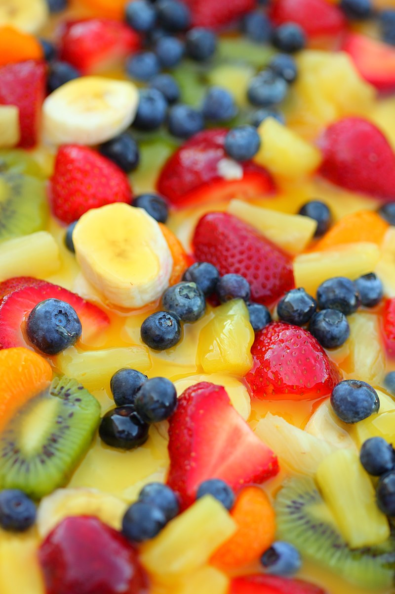
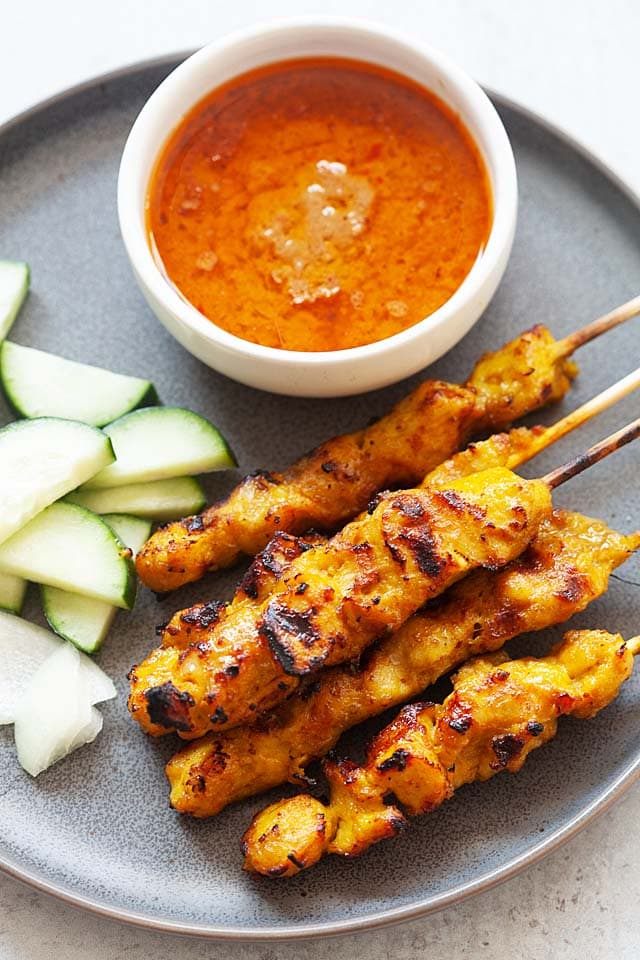
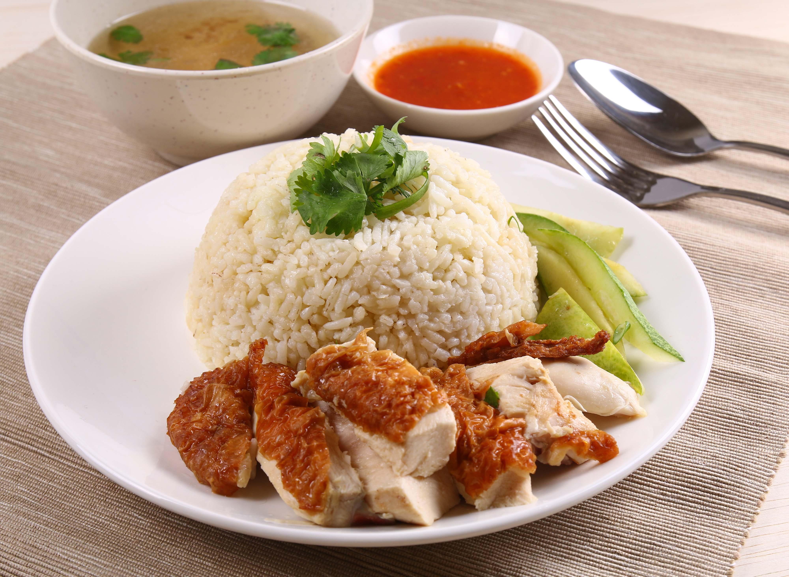
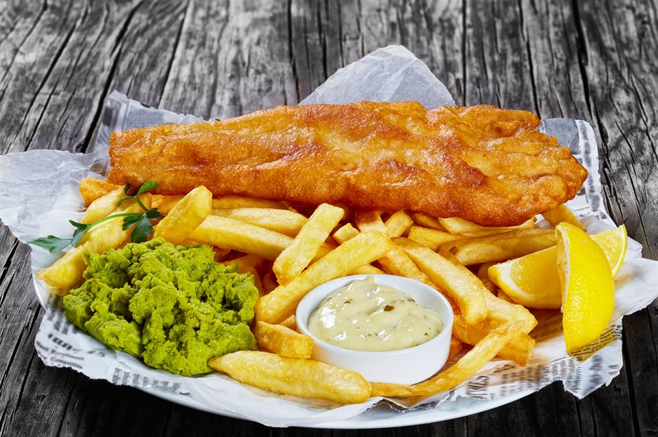
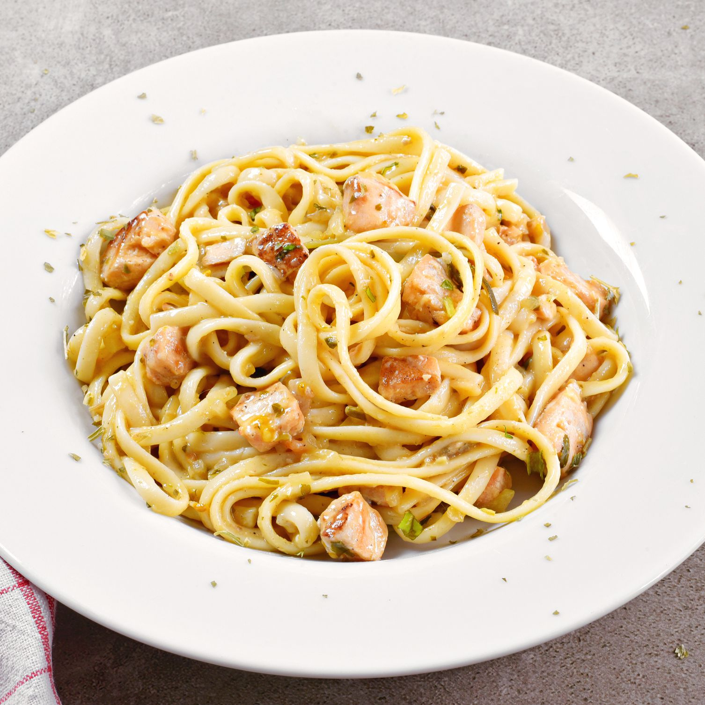
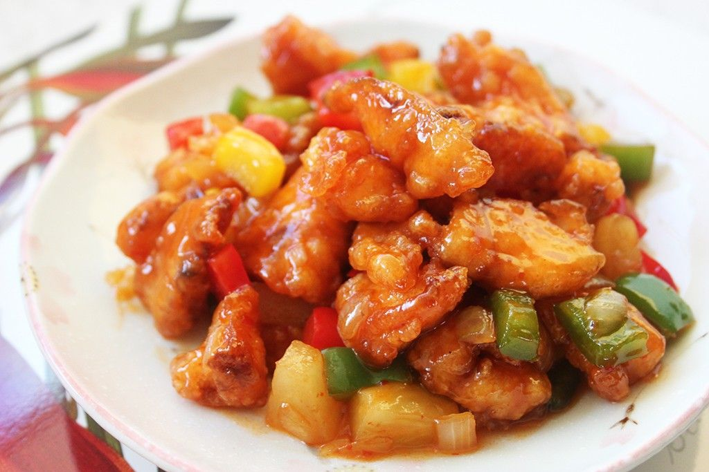
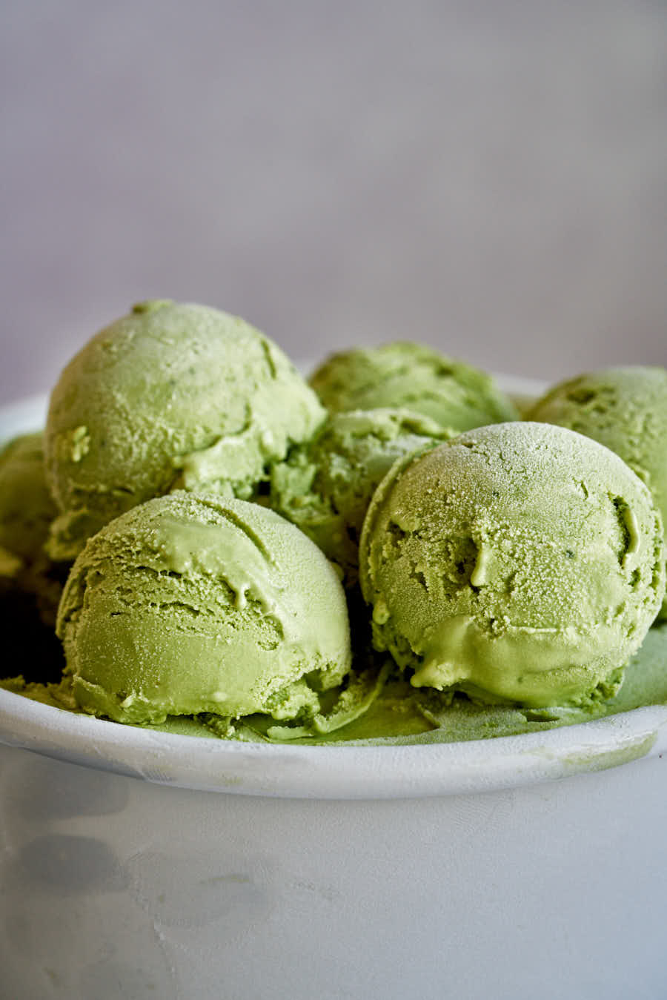
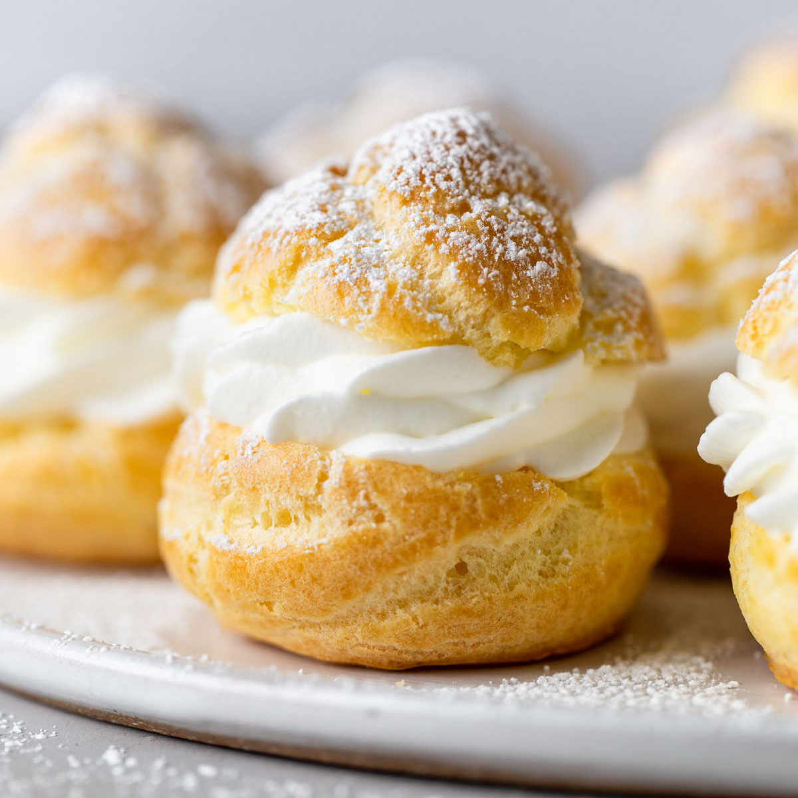

| Appetizer |
~ Fruit Salad ~
Fruit salad is a dish consisting of various kinds of fruit, sometimes served in a liquid, either their own juices
or a syrup. In different forms, fruit salad can be served as an appetizer, a side salad. When served as an appetizer,
a fruit salad also known as a fruit cocktail. |
 |
|  |
~ Satay ~
Satay may consist of diced or sliced chicken, goat or beef; bamboo skewers are often used, while rustic style of
preparations employ skewers from the midrib of the coconut palm frond. These are grilled or barbecued over a wood or
charcoal fire, then served with various spicy seasonings. Satay can be served in various sauces; however, most often
they are served in a combination of soy and peanut sauce. Hence, peanut sauce is often called satay sauce. |
| Main Dish |
~ Chicken Rice ~
The general term chicken rice can refer to multiple variations including roasted and fried chicken, can be served with
a variety of sauces including barbecue, and can be accompanied by a variety of side dishes including steamed rice rather
than seasoned 'oily' rice or soup. |
 |
|  |
~ Fish n Chips ~
Fish and chips is a popular hot dish consisting of fried fish in crispy batter, served with chips. It is also served with
tartar sauce with slices of lemon on the side. |
~ Spaghetti ~
An emblem of Italian cuisine, spaghetti is frequently served with tomato sauce, which may contain various herbs (especially
oregano and basil), olive oil, meat, or vegetables. Other spaghetti preparations include amatriciana or carbonara. Grated hard
cheeses, such as Pecorino Romano, Parmesan and Grana Padano, are often sprinkled on top. |
 |
| Side Dish |
 |
~ Tteokbokki ~
Tteokbokki or simmered rice cake is made from small-sized cylinder-shaped rice cakes. Fish cakes, boiled eggs, and
scallions are some common ingredients paired with tteokbokki in dishes. It can be seasoned with either spicy gochujang
(chili paste) or non-spicy ganjang (soy sauce). |
~ Sweet Sour Fish Fillet ~
Sweet and sour is a generic term that encompasses many styles of sauce, cuisine, and cooking methods. The dish consists
of fish fillet, served with sweet and sour sauce. Sometimes it is topped with pineapple, green pepper, carrot, or sweet pickles. |
 |
 |
~ Sushi ~
Sushi is a Japanese dish of prepared vinegared rice, usually with some sugar and salt, accompanied by a variety of ingredients,
such as seafood, often raw, and vegetables. Styles of sushi and its presentation vary widely, but the one key ingredient is "sushi rice". |
| Dessert |
~ Mochi ~
Mochi is a Japanese rice cake made of mochigome, a short-grain japonica glutinous rice, and sometimes other ingredients such as water, sugar,
and cornstarch. The rice is pounded into paste and molded into the desired shape. It can be filled with ice cream or any jam. |
 |
|  |
~ Green Tea Ice Cream ~
Green tea ice cream or matcha ice is a Japanese ice cream flavor. This flavor is popular in Japan and other parts of East Asia. |
~ Cream Puff ~
A cream puff is a filled French choux pastry ball with a typically sweet and moist filling of whipped cream, custard, pastry cream, or ice cream.
The puffs may be decorated or left plain or garnished with chocolate sauce, caramel, or a dusting of powdered sugar. Savory profiteroles are also made,
filled with pureed meats, cheese, and so on. |
 |
|